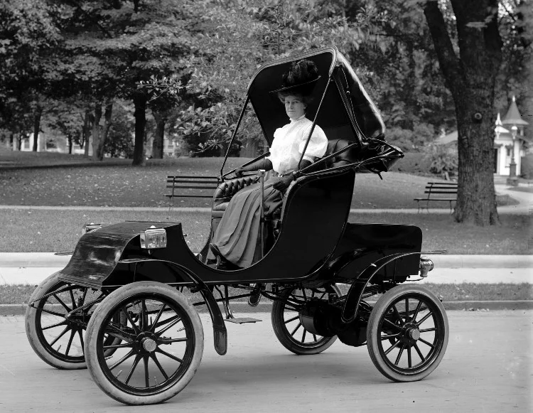
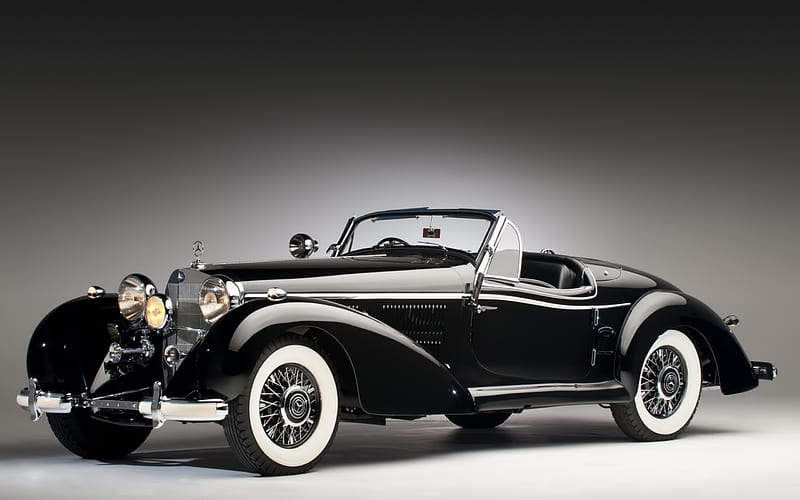
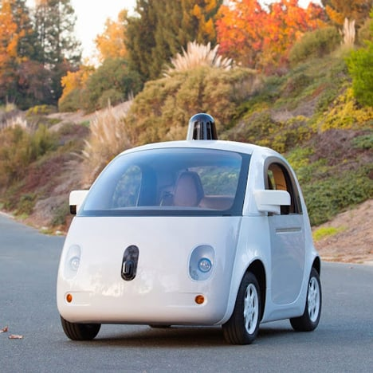

.jpg)
It all began with the creation of steam engine automobile capable of human transport in 1769, a little later in 1806 cars powered by an internal combustion engine-running on fuel came into existence which was an impetus to modern gasoline or petrol-fueled internal combustion engine, introduced in 1885. The year 1886 is regarded the year of birth of the modern automobile – with the Benz Patent-Motorwagen, Carl Benz received the patent for it on January 29 of the same year. Here is an insight into the journey of automobiles from steam-powered wheeled vehicles, to the latest automobiles.
In 1886, Karl Benz developed a petrol powered automobile, with a single cylinder two stroke engine which was considered as first practical motorcar and received a patent for it on January 29, 1886. He began the production of automobiles in 1888.
One of the first four-wheeled petrol-driven automobiles in Britain was built in Birmingham in 1895 by Frederick William Lanchester, who also patented the disc brake; and the first electric starter was installed on an Arnold, an adaptation of the Benz Velo, built between 1895 and 1898.
Electric cars enjoyed popularity between the late 19th century and early 20th century, when electricity was among the preferred methods for automobile propulsion, providing a level of comfort and ease of operation that could not be achieved by the gasoline cars of the time, but this could not last for a longer time in the market due to some inherent flaws.
The Ford Model T was the most available and used car of the Edwardian (Brass) era. Between 1908 and 1927 it was the most influential car. Another milestone that would be remembered for a long time is Bugatti Type 13 — a notable racing model with unique and advanced designing. Some other influential models included Types 15, 17, 22 and 23.

If we look back to the vintage era between 1924–1929 Bugatti Type 35 was the most successful racing model winning more than 1000 victories in five years. Ford Model A was launched in the year 1927 with a total different design as compared to Model T and it was the best-seller with a production of almost 4 million cars.
The Volkswagen Beetle ruled the market from 1938 to 2003. It was produced for more than 60 years with minimal design and technical changes making it the largest production across several countries.
Another such nostalgic milestone is Rolls-Royce Phantom III which is know for it superior performance and quality. It was in 1936 that the car used a V12 Engine and unique technological advances that were not used by many of its peers.
Between the years 1959 and 2000, Mini was the most famous car enjoying longevity in the market for about four decades. It was a quintessential small car that was awarded the second place in international Car of the 20th Century competition; the car has a re-styled new version in the 21st century.
In the end of the 20th century Fiat 124 — an Italian car that was licence produced in many other counties including the Soviet Union was labelled another milestone owing to its design and high performance.
This era has seen a rapid progress, many new designs and launches. The modern era has also seen rapidly rising fuel efficiency and engine output.
In 1970 the present Range Rover – the first take on the combination of luxury and four-wheel drive utility, the original SUV was launched. A new model was brought in 1994 after almost 20 years which exemplifies its legacy.
Mercedes-Benz S-Class was launched in 1973 and its features later become standard throughout the automobile industry. Electronic anti-lock braking system, supplemental restraint airbags, seat belt pretensioners, and electronic traction control systems all made their debut on the S-Class.

In 1966 Toyota Corolla a simple small Japanese sedan the best-selling car of all time. It is one of the finest models of automobiles, the first Corolla generation was introduced with the 1100 cc K pushrod engine, after which in the coming decades it underwent many redesigns. The present BMW 3 Series has been on Car and Driver magazine’s annual Ten Best list 17 times, making it the longest running entry in the list. These cars have set high benchmarks in the industry.

Autopilot is an advanced driver assistance system that enhances safety and convenience behind the wheel. When used properly, Autopilot reduces your overall workload as a driver. Each new Tesla vehicle is equipped with eight external cameras and powerful vision processing to provide an additional layer of safety.

The Google self-driving car project is now Waymo. Waymo stands for a new way forward in mobility. Self-driving technology is the mission of Waymo,It ensures that people would find it safe and easy to move around. Google says the sophisticated operating system that guides the cars makes them safer than if a human driver were behind the wheel. The vast majority of car accidents are caused by human error. Self-driving cars can also travel closer together, which would cut down on traffic congestion.
